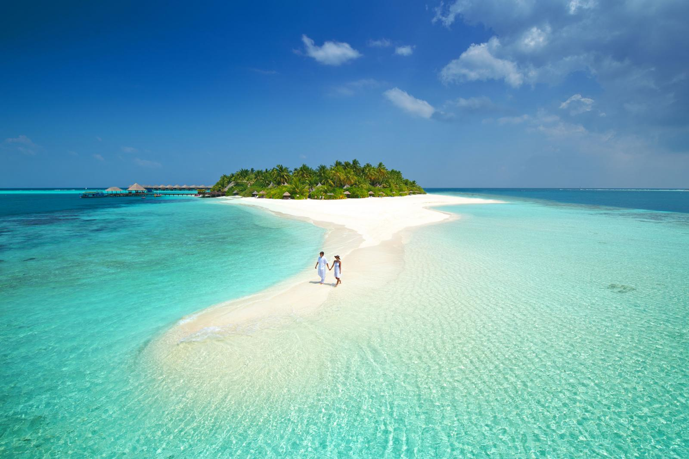
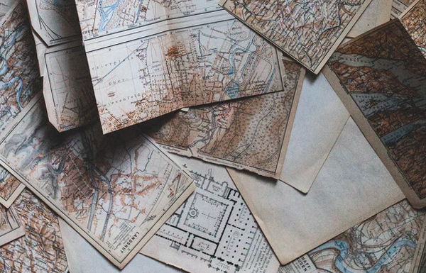
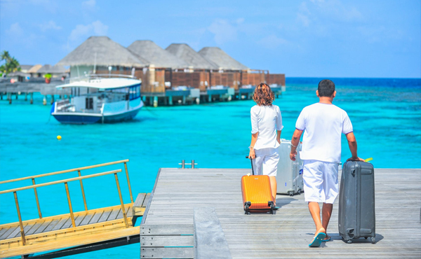
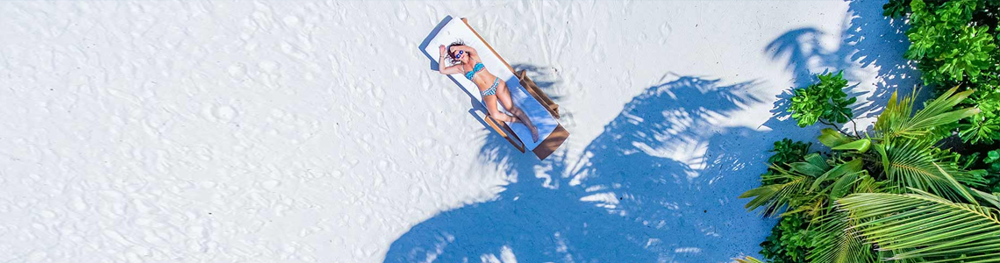

Мальдивы
Отдых на Мальдивах – особенности страны, ее законы
Мальдивы – одно из уникальных островных государств планеты. Об отдыхе на этих благословенных островах с удовольствием делятся путешественники всего мира! Яркость увиденных здесь пейзажей впечатывается в сетчатку, заряжая солнцем и энергией на весь год, а пережитые на Мальдивах эмоции долго хранятся в памяти, возвращаясь в наших снах и дневных грезах. И, конечно, в наших мечтах и планах, в разговорах с любимыми и друзьями. Мы учим детей плавать в бассейнах и водоемах, а сами думаем: скоро наш ребенок будет готов к морю, возьмем его с собой в отпуск на эти необыкновенные острова!
Путешествие на Мальдивские острова – это своеобразная Робинзонада, пожалуй, больше нигде нам не удается так слиться с великолепной природой, почти раствориться в шепоте закатных волн, нежности песка и созерцании удивительных, гибких и разноцветных подводных созданий, которые сопровождают здесь любителя поплавать с маской, приближаясь к нему или бросаясь прочь.
Эти благословенные острова необыкновенны! Путешественники, увлеченные экзотическими странами, да и просто все, кто уже здесь побывал, обязательно стремятся сюда вновь! Отпуск, проведенный здесь, оставляет в сердце каждого прекрасную комнату счастливых воспоминаний! Мальдивы - это полузабытые воспоминания о земном Рае, наши сладкие сны о золотом детстве человечества! И что может быть лучше подарка любимой, чем мальдивское путешествие вдвоем?
История Мальдивских островов
Мальдивы – тропический рай, где пляжный сезон длится 365 дней в году, где безмятежная синева неба отражается в кристально чистых водах Индийского океана. Кажется, что этот идиллический уголок создан только для того, чтобы наслаждаться радостями жизни, – проблемы и политические интриги обходят его стороной. Но это обманчивое впечатление. История Мальдивских островов насыщена событиями.
От рединов до британцев
В отличие от соседних Индии и Шри-Ланки, история Мальдив мало изучена. Если верить исследованиям, цивилизация на островах существует более 3000 лет. Эту теорию в 1980-х годах подтвердил норвежский археолог и писатель Тур Хейердал. Проведя раскопки на атоллах Адду и Хуваду, он выяснил, что когда-то эти земли населяли арийские племена. Высокие белокожие люди с голубыми глазами и орлиными носами называли себя рединами и поклонялись Солнцу.
Найденные фрагменты керамики позволяют утверждать, что редины обитали на островах еще в 2000 г. до н.э.
Примерно в то же время остров Ниланду населяли холины. Однако об их происхождении практически ничего не известно.
На звание старейших аборигенов Мальдив претендует община гиравару. На протяжении веков ее представители обитали на одноименном острове, но с началом строительства международного аэропорта были вынуждены переселиться на Мале.
По одной из версий, предки гиравару родом из южной Индии, по другой – из Австралии. В 500 г. до н.э. на Мальдивах началась вторая волна заселения. На островах обосновались выходцы со Шри-Ланки, которые распространили буддизм.
До XVI века население островов состояло в основном из индийцев, малайцев и сингалов. Но в 1507 году архипелаг привлек внимание португальцев. За ними пришли французы, голландцы и британцы, которые по очереди устанавливали свой протекторат.
Принятие ислама
Вплоть до XII столетия – более 1000 лет – мальдивцы исповедовали буддизм. Но в 1153 году на островах высадился арабский торговец Абу аль-Бакарат, который убедил местного короля принять ислам.
Согласно преданию, каждый месяц островитяне жертвовали джинну Раннамари невинную девушку. Ее приводили в храм и оставляли на ночь. На следующий день несчастную находили мертвой. Возмутившись жестокостью ритуала, Абу аль-Бакар решил положить ему конец. В назначенный час он сам пришел в святилище и провел всю ночь за чтением Корана. Священные суры отпугнули злого духа, который скрылся в морских глубинах и больше не тревожил жителей острова.
С этого времени на Мальдивах началась эпоха ислама и султанатов, за которую сменилось шесть династий и 90 правителей.
Мальдивы в ХХ веке
В конце XIX столетия, опасаясь экспансии со стороны Индии, мальдивцы подписали соглашение с Британией. Согласно документу, англичане предоставляли свою военную помощь в случае иностранного вторжения, но при этом не вмешивались во внутренние дела страны.
Британское присутствие продолжалось до 1965 года. 26 июля 1965 года Мальдивы получили независимость.
В 1932 году британцы поддержали Мохаммеда Шамсуддина III, который принял первую конституцию страны. Новый закон ограничивал единоличную власть султана и обеспечивал свободные выборы. А в 1953 году правитель Амин Диди упразднил султанат, принял новую конституцию и стал первым президентом Мальдивской Республики. Он ввел всеобщее начальное образование и избирательное право для женщин. В конце 1953 года в результате голодных бунтов Амин Диди был свергнут.
На смену ему пришел Мохаммед Фари Диди, который восстановил султанат и стал последним, 94-м султаном Мальдивских островов. Правда, к тому времени титул превратился в некое почетное звание, а настоящая власть перешла к премьер-министру.
Свою третью конституцию Мальдивы приняли в 1968 году в ходе референдума. Вместо Мальдивских островов страна стала официально называться Мальдивской Республикой. Президент Ибрагим Насир продержался у власти 6 лет и в 1978 году во время народного протеста против повышения цен бежал из страны.
С 1978 года на протяжении 30 лет (6 пятилетних сроков подряд) Мальдивами единолично правил президент Момун Абдул Гаюм. После волнений 2004 года Гаюм пообещал расширить политические свободы. В 2008 году состоялись первые президентские выборы с участием нескольких кандидатов, в результате которых новым президентом Мальдив стал Мохамед Нашид.
С 2018 года страной руководит президент Абдулла Ямин.Туры на Мальдивы
Мальдивиана — крупнейший туроператор по Мальдивским островам. У компании всегда в наличии путевки на Мальдивы для туристов с самыми разными запросами и заманчивые спецпредложения.
Посмотреть ближайшие туры на Мальдивские острова, цены Выбрать один из отелей на МальдивахЧто же именно влечет путешественников на эти острова? Конечно, не только яркие впечатления - ведь в мире множество любопытных мест где есть что посмотреть, природные и культурные богатства которых вполне могли бы конкурировать с Мальдивами.
На Мальдивских островах замечательная природа – и эта красота сопоставима, например, с Сейшелами и Маврикием. Но только на Мальдивах ощущается это фантастическое чувство полной безмятежности и покоя, которые в такой концентрации нельзя испытать ни в каком другом месте… Эти острова - край земли и, кажется, именно здесь началась легендарная история наших прародителей…
Отдых на Мальдивах
Яркая отпускная жизнь в неповторимое время в поистине необыкновенном месте – вот что ждет на этих островах уставшего за год трудоголика или влюбленную пару! Мальдивы потрясающе разнообразны и представляют собой архипелаг из двадцати атоллов (групп островов и островков) в экваториальных водах Индийского океана, несколько южнее острова Шри-Ланка. А сам архипелаг состоит из тысячи двухсот островов и островков, защищенных коралловыми рифами от высоких волн.
Многие острова архипелага до сих пор не заселены! И только немногим более двухсот островов обитаемы и обладают комфотными условиями для взыскательного туриста! Маленькие острова представляют собой целиком территорию какого-нибудь одного изысканного отеля!
Чистейший песок, круглогодичная летняя погода, полная безопасность – никаких ядовитых насекомых и хищных млекопитающих, абсолютная защита от издержек шумной цивилизации… Природа Мальдивских островов точно сама позаботилась о нас в соответствии с нашими желаниями и представлениями о наилучшем отдыхе –часть ландшафтов покрыта буйной тропической растительностью, а другая состоит только из белоснежного песка в окружении лазурной воды.
Случилось так, что именно на Мальдивах людям удалось устроить свою жизнь в гармонии с природой, бережно заботясь о ней и делясь красотой своей страны с прибывающими сюда туристами. Обеспечивая туристам высокий уровень сервиса, мальдивцы никогда не забывают о сохранении своих природных богатств.
Туры на Мальдивы – прекрасный выбор для тех, кто жаждет прекрасного, спокойного и высококачественного отдыха, любит свободу и уединение, устал от калейдоскопа будней и мечтает забыть о неумолимом беге времени!
Отдых на Мальдивах подходит не только любителям полного релакса. Здесь множество возможностей и для активного отдыха - Мальдивские острова предпочитают дайверы со всего мира. Удивительный красочный подводный мир с его тысячами морских обитателей и уникальные течения, позволяющие пловцам словно парить над великолепными рифами, - вот что такое отпуск на Мальдивах! А почувствовать себя первобытным охотником и рыболовом может каждый, кто отправится на мальдивской лодке дони на загадочную ночную рыбалку…
Любители серфинга, отдыхая на Мальдивах, оценят «качественную волну», которую они всегда могут поймать близ некоторых островов. Для активных водных развлечений здесь предоставляют все необходимое оборудование.
Отдых здесь хорош и для семей с детьми - некоторые отели специализируются именно на таком отдыхе, предоставив соответствующую безопасную инфраструктуру, услуги няни и детское меню.
Безусловно, мальдивский рай - идеальное место для путешествующих влюбленных. При чем, совершенно не важно, каков стаж их отношений – может быть, уже много лет, в счастливом браке… Для влюбленных отели на Мальдивах предлагают самые романтические варианты размещения, спа-услуги для пары и даже волшебную ночь на настоящем необитаемом острове... Символическая свадебная церемония со следами босых ступней на песке, с лепестками цветов и солеными морскими брызгами, с нежными клятвами при самых лучших свидетелях – бескрайнем небе и бескрайнем море -запомнится на долгие годы!
Преимущества отпуска на Мальдивах неисчерпаемы — здесь каждый может осуществить свою мечту и пережить свои счастливые мгновенья! Лучше этого путешествия на блаженный край света, кажется, просто ничего не существует!